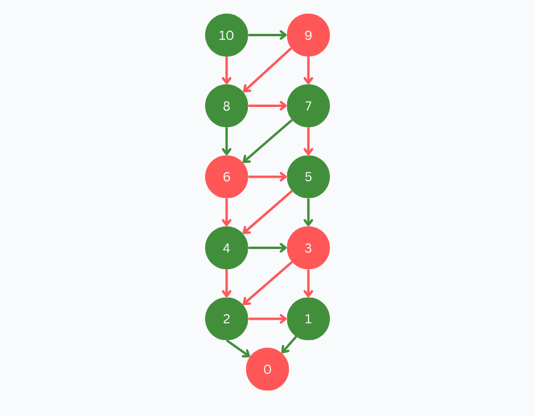
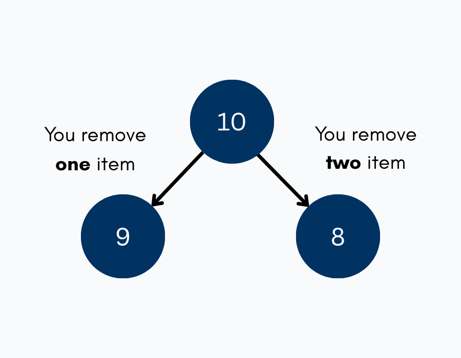
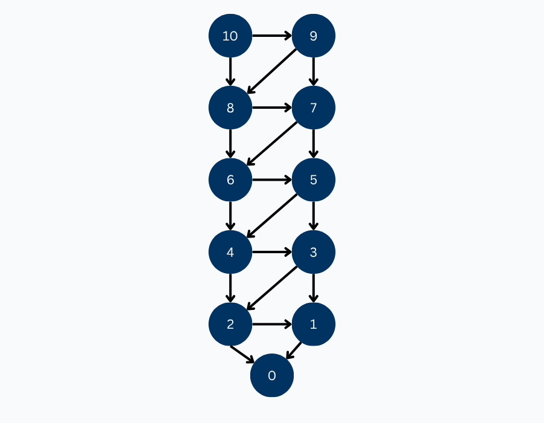

10-to-0-by-1-or-2 (GamesmanPy Example)
Here, we will walk through how to implement a game in GamesmanPy! The game we will be implementing is 10-to-0-by-1-or-2, which is a 2-player game that starts at 10 and have players alternate subtracting 1 or 2. The player who reaches 0 loses.
1. Game Overview
Check out the Solving a Game chapter of the textbook, which includes a full analysis of the game and its optimal strategy.

The implementation of this game in GamesmanPy will require implementing several key methods. The required methods are:
- __init__ : should be mostly done for you, just update class name and create additional instance variables if needed.
- start : returns the starting position of the game, as an integer.
- generate_moves : returns a list of valid moves from the given (integer) position. Moves should also be encoded as integers.
- do_move : applies the given move to the given position, and returns the resulting position as an integer.
- primitive : returns the value (Value.Loss, Value.Tie, Value.Win) of a position if it is primitive, else returns None.
- to_string : transform and return the given integer position into a string representation, based on the given mode.
- from_string : transform and return the given StringMode.Readable position string into the integer representation.
- move_to_string : transform and return the given integer move into a string representation, based on the given mode.
- hash_ext : given a position, return a number representing the hash number of the position. If you decide not to implement this function, the default behavior is returning position. Therefore, position will have to be an integer.
2. Position Encoding
For this game, the position values are values between 0 and 10. We start
at 10, so the start method simply returns 10 as an integer:

def start(self) -> int:
return 10 # game begins with the counter at 10This is the simplest possible position representation in GamesmanPy, since we are not doing any additional encoding or hashing. Here, the "encoding" is just the game state itself.
3. Generating Moves
The only legal moves are subtracting 1 or subtracting 2, provided the result doesn't go below 0. This is expressed as a one-liner list comprehension. This captures every legal move at each position and excludes illegal moves that would produce negative numbers:
def generate_moves(self, position: int) -> list[int]:
return [x for x in [1, 2] if position - x >= 0]The moves available at each position are:
| Position | Available moves | Resulting positions |
|---|---|---|
| 10 | 1, 2 | 9, 8 |
| 9 | 1, 2 | 8, 7 |
| … | 1, 2 | … |
| 2 | 1, 2 | 1, 0 |
| 1 | 1 | 0 (can't subtract 2) |
| 0 | none | terminal |
Here is a visual representation of the moves from each position:

4. Doing a Move
Doing a move means moving to the next position given the current position and the move from that position. In this game, this means subtracting the move value from the current position value:
def do_move(self, position: int, move: int) -> int:
return position - moveHere are few example outputs:
do_move(10, 1) → 9
do_move(10, 2) → 8
do_move(3, 1) → 2
do_move(3, 2) → 1
do_move(1, 1) → 05. Primitive
The primitive is the state at which no more moves are available from that position and we can assign a value (win, lose, or tie). In this game, the only terminal position is 0. When a player faces 0, there are no legal moves available, so that player loses:
def primitive(self, position: int) -> Optional[Value]:
if position == 0:
return Value.Loss
else:
return NoneHow the solver propagates values
When the solver is run, the algorithm starts at the primitive position and works backwards to assign values to every position. The value of a position is Win if it has at least one move to a Lose position and Lose if all moves lead to Win positions. Please see the Solving a Game chapter of the textbook, which includes a full analysis of the game and its optimal strategy. Here is the full value table for all positions 0–10:
| Position | Moves to | Reasoning | Value |
|---|---|---|---|
| 0 | — | Primitive terminal | Lose |
| 1 | 0 (Lose) | Can move to a Lose position | Win |
| 2 | 1 (Win), 0 (Lose) | Can move to a Lose position | Win |
| 3 | 2 (Win), 1 (Win) | All moves lead to Win positions | Lose |
| 4 | 3 (Lose), 2 (Win) | Can move to a Lose position | Win |
| 5 | 4 (Win), 3 (Lose) | Can move to a Lose position | Win |
| 6 | 5 (Win), 4 (Win) | All moves lead to Win positions | Lose |
| 7 | 6 (Lose), 5 (Win) | Can move to a Lose position | Win |
| 8 | 7 (Win), 6 (Lose) | Can move to a Lose position | Win |
| 9 | 8 (Win), 7 (Win) | All moves lead to Win positions | Lose |
| 10 | 9 (Lose), 8 (Win) | Can move to a Lose position | Win |
Here is a visual representation of the values of each position, with winning positions in green and losing positions in red:
6. String Methods
Ten to Zero has really simple string conversions, since the position and move are both just their integer values printed as strings.
Position string
def to_string(self, pos: int, mode) -> str:
return str(pos)def from_string(self, stringpos: str) -> int:
return int(stringpos)Move string
def move_to_string(self, move: int, mode) -> str:
return str(move)The purpose of these functions is to produce a human-readable string for each position and move, which is used for display in the TUI.
Putting it All Together
We're done! Here is the full implementation in GamesmanPy!
from models import Game, Value
from typing import Optional
class TenToZero(Game):
id = 'ten-to-zero'
variants = ['default']
n_players = 2
cyclic = False
def start(self) -> int:
return 10
def generate_moves(self, position: int) -> list[int]:
return [x for x in [1, 2] if position - x >= 0]
def do_move(self, position: int, move: int) -> int:
return position - move
def primitive(self, position: int) -> Optional[Value]:
if position == 0:
return Value.Loss
return None
def from_string(self, stringpos: str) -> int:
return int(stringpos)
def move_to_string(self, move: int, mode) -> str:
return str(move)
def to_string(self, pos: int, mode) -> str:
return str(pos)This is most likely the simplest possible game you could implement in GamesmanPy, so it's a great starting point for understanding the methods. However, your game/puzzle will most likely be a lot more complex.
GamesmanPy Game Class Structure
| Field / Method | Type | Purpose |
|---|---|---|
id | class str | Unique game identifier used by the server and UWAPI routing |
variants | class list | List of supported variant IDs (at least one required) |
n_players | class int | Number of players (2 for all standard two-player games) |
cyclic | class bool | Whether the game graph can have cycles; affects solver strategy |
start() | returns int | Returns the initial position |
generate_moves(pos) | returns list[int] | Returns all legal moves from this position |
do_move(pos, move) | returns int | Returns the position resulting from applying move to pos |
primitive(pos) | returns Optional[Value] | Returns Value.Loss, Value.Win, Value.Tie, or None |
to_string(pos, mode) | returns str | Encodes position as a string (readable or AutoGUI format) |
from_string(s) | returns int | Decodes a string back to a position integer |
move_to_string(move, mode) | returns str | Encodes a move as a string (readable or AutoGUI format) |
Running the Solver
To run the solver, use uv run solver